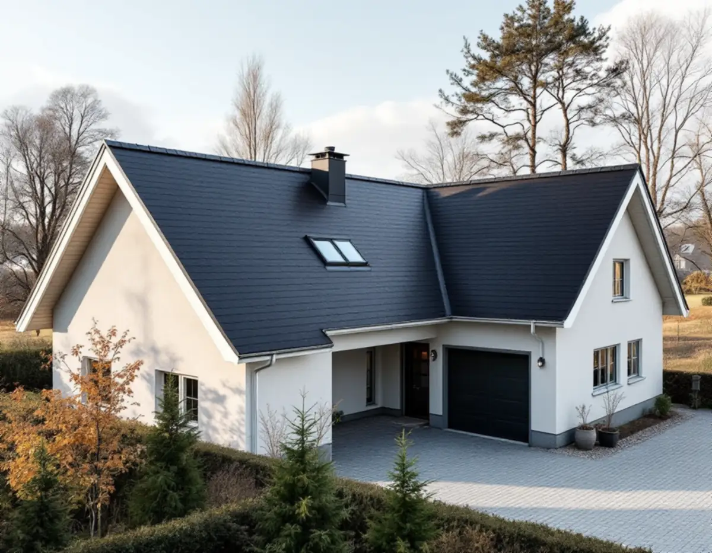
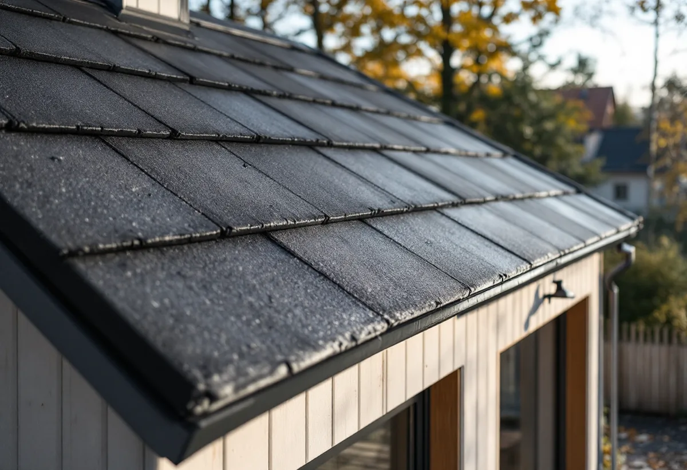
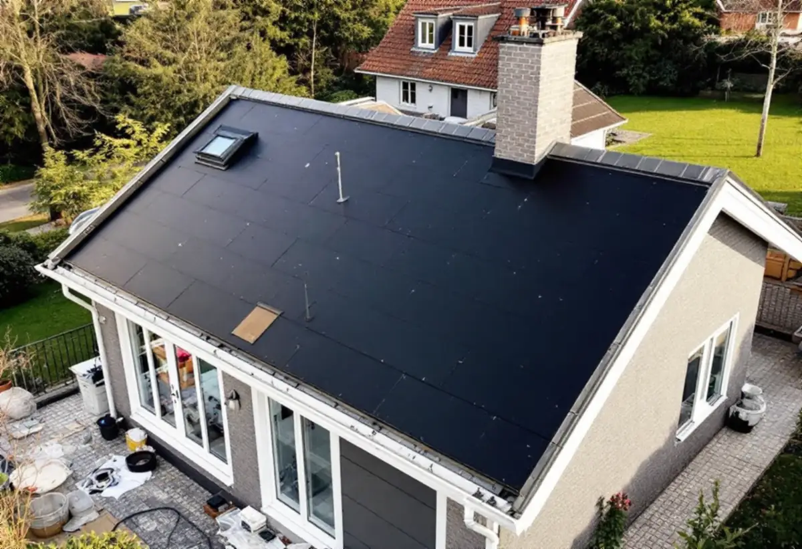

Besiktning
Vi går upp på taket och vinden, bedömer pappen, råsponten och detaljerna och avgör om taket ska lagas eller läggas om.

Vi byter och lägger nytt papptak på villor, radhus och funkishus med låg taklutning.
Beskriv jobbet kort.
Något blev fel. Kontrollera uppgifterna eller ring 08 12 410 276.
Vi tittar på jobbet på plats innan du får offert.
Du ser vad som ingår och vad det kostar.
Vi drar av ROT direkt och sköter ansökan.
Geal Entreprenad AB, Bromma. Org.nr 559303-7566.

Ett papptak brukar hålla 20–30 år, och när det är slut lägger vi ny underlagspapp och ytpapp och gör alla detaljer täta. Du får fast pris efter ett gratis besök.
Papptak brukar hålla 20–30 år, kortare på låglutande tak där vatten blir stående. Papp är vanligt på funkisvillor, radhus och hus med nästan platta tak, där pannor inte fungerar.
Ett gammalt papptak kan ofta lagas punktvis så länge pappen är hel i övrigt. Är den spröd över hela ytan, eller har fukt nått råsponten, är det dags att lägga om. Osäker? En takbesiktning ger besked.
Vi går upp på taket och vinden, bedömer pappen, råsponten och detaljerna och avgör om taket ska lagas eller läggas om.
Den gamla pappen tas bort och forslas bort, så att underlaget kan kontrolleras.
Råsponten kontrolleras och skadade eller fuktskadade partier byts.
Ett första lager papp läggs över hela takytan med täta skarvar.
Ytpappen läggs ovanpå och skyddar mot sol, regn och slitage.
Fotplåt, vindskivor, genomföringar och avvattning görs täta, och vi går igenom taket tillsammans med dig.

På ett låglutande tak rinner vattnet långsamt, så skarvar, takfot och anslutningar måste vara helt täta. De vanligaste läckagepunkterna är runt skorsten, ventilation och andra genomföringar, vid takfoten och där taket möter en vägg.
Därför byter vi plåtdetaljer som fotplåt och vindskivor när de är slitna, och ser över hängrännor och stuprör i samma omgång.
Både papp och plåt fungerar på låga taklutningar. Papp har kortare livslängd, 20–30 år, medan ett plåttak brukar hålla 40–50 år. Falsad plåt är det klassiska alternativet på funkishus, se falsat plåttak och bandtäckning.
Vill du byta från papp till plåt bedömer vi underlaget och lutningen vid besöket. Sedan 1 december 2025 kräver byte av takmaterial på villa och radhus normalt inget bygglov, utom i skyddade miljöer – läs mer i bygglov för takbyte. Jämför fler material i livslängd per takmaterial.
Priset beror på takets yta, lutning och form, om råsponten behöver bytas, antal genomföringar och plåtdetaljer samt ställning och åtkomst. Rivning och bortforsling av den gamla pappen ingår i ett komplett byte.
Vi publicerar inga fasta priser. Vi kommer ut gratis och lämnar ett skriftligt kostnadsförslag med fast pris. Vill du ha en första uppskattning per kvadratmeter kan du räkna på papptak på takbytepris.nu. Mer om vad som styr priset finns i vad kostar ett takbyte.
Arbetskostnaden för att byta papptak på villa ger ROT-avdrag. Vi gör avdraget direkt på fakturan. För 2026 är ROT-avdraget 30 % av arbetskostnaden, med ett tak på 50 000 kr per person och år. Läs mer i vår guide om ROT-avdrag för takarbete.
Funkisvillor med låga tak.
Bromma →Villatak i Råsunda och Råsta.
Solna →Radhus med låglutande tak.
Järfälla →Villor och radhus från 60–70-talet.
Täby →Plåt- och papptak i Rissne.
Sundbyberg →Nytt plåttak på låg lutning.
Plåttak →Så länge håller papp, plåt och pannor.
Livslängd per takmaterial →Komplett takbyte på villa.
Takbyte →Pris per kvm och ROT.
Vad kostar ett takbyte? →Eller ring 08 12 410 276, mån–fre 08–17.
Beskriv jobbet kort.
Något blev fel. Kontrollera uppgifterna eller ring 08 12 410 276.